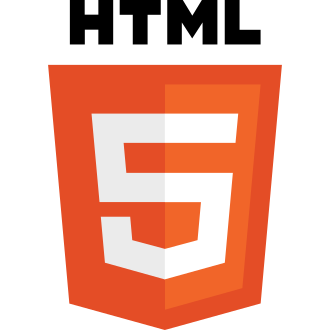
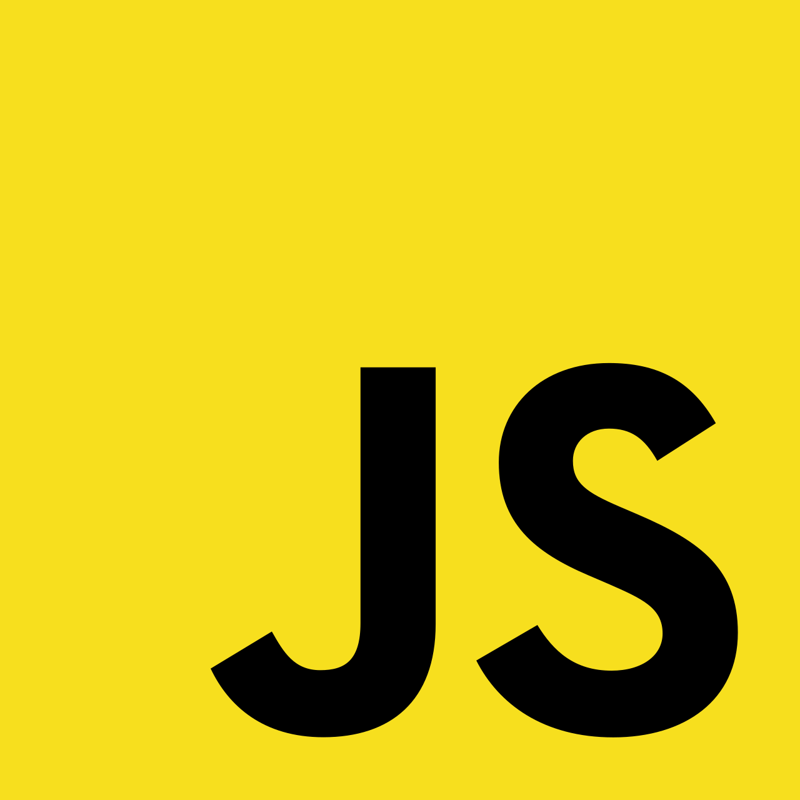

Oct. 2025 — Fév. 2026 · Projet d'équipe ESIEA
IsNoTaTALAN

Technologies utilisées

HTML5 CSS3
CSS3
JavaScript Git
Git VS Code
VS Code- HTML5 — Structure du jeu et des menus
- CSS3 — Rendu visuel, animations, sprites, transitions
- JavaScript — Logique de jeu, génération procédurale, modes

Présentation du projet
Premier projet informatique réalisé à l'ESIEA avec l'équipe TALAN. Après un semestre de travail collectif, nous avons développé un jeu 2D entièrement en HTML, CSS et JavaScript, sans framework ni moteur de jeu externe.
Ce projet nous a permis de progresser en algorithmique, en programmation JavaScript, en travail d'équipe et en gestion de projet avec Git.

Mécaniques de jeu
- Génération procédurale — labyrinthe unique à chaque partie
- Trouver la clé cachée dans le labyrinthe
- Ouvrir la porte pour s'échapper
- 3 modes — Normal, Infinity et Hardcore